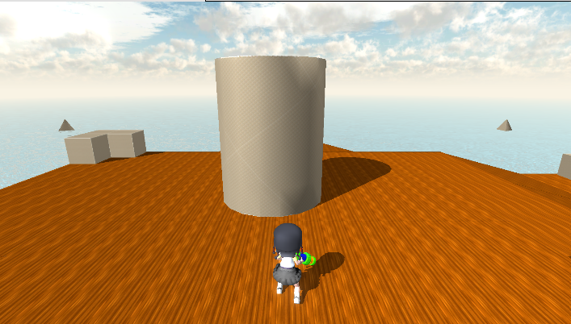
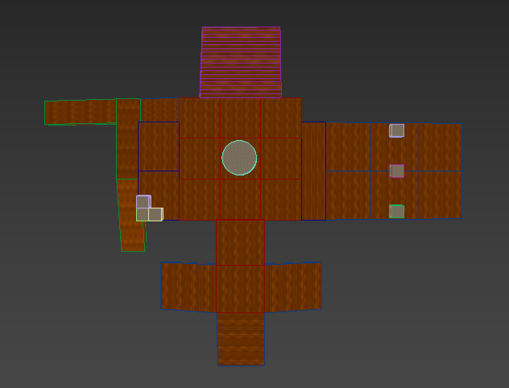

平面の平面方程式から平面上の点Pと法線Nが分かるので、
PAベクトル、PBベクトルをそれぞれNと内積して、
片方がプラス、片方がマイナスなら交差していると判断できます。

河原電子ビジネス専門学校
ゲームクリエイター科2年 中谷来斗
３人称視点のアクション型タワーディフェンスゲームです。
学校内製エンジンを改造して使用
Visual Studio 2019
3ds Max 2021
Adobe Photoshop 2022
Git
C++
HLSL
EffekSeer
Windows10
DirectX12
1人
2022年9月～2023年2月
ポリゴンとレイの当たり判定を取るため、ポリゴンの頂点を平面、
レイを線分と仮定し、以下の処理を行います。
平面と線分の交差判定を行う
平面と線分の交点を求める
三角形の内側に点があるかどうかを求める
はじめに、内積を使って平面と線分の交差判定を行います。
平面の平面方程式から平面上の点Pと法線Nが分かるので、
PAベクトル、PBベクトルをそれぞれNと内積して、
片方がプラス、片方がマイナスなら交差していると判断できます。
求めた交点の座標がポリゴンからなる、三角形の中に含まれているかどうかの判定を取ります。
 ▼三角形の外に点がある場合
▼三角形の外に点がある場合


川瀬式ブルームを実装。
1.通常シーンをオフスクリーンレンダリング後、輝度が高いピクセルを抽出する。
2.ブラーとダウンサンプリングをかけながら複数枚のテクスチャを作成する。
3.複数枚のテクスチャの平均を取って加算合成する。
▼通常シーン

▼輝度抽出したテクスチャ

▼ブラーをかけながらダウンサンプリングしたテクスチャ

▼加算合成後

3dsMAXで地形データを作成し、レベルで保存 読み込みを行う。
読み込んだ地形データを元に移動するようする。
▼ステージ

▼地形データ

▼シャドウマップ
 ▼影を描画
▼影を描画
▼フォグあり
 ▼フォグなし
▼フォグなし
▼透過あり
 ▼透過なし
▼透過なし